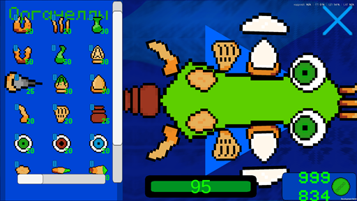
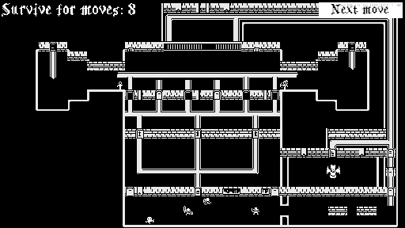
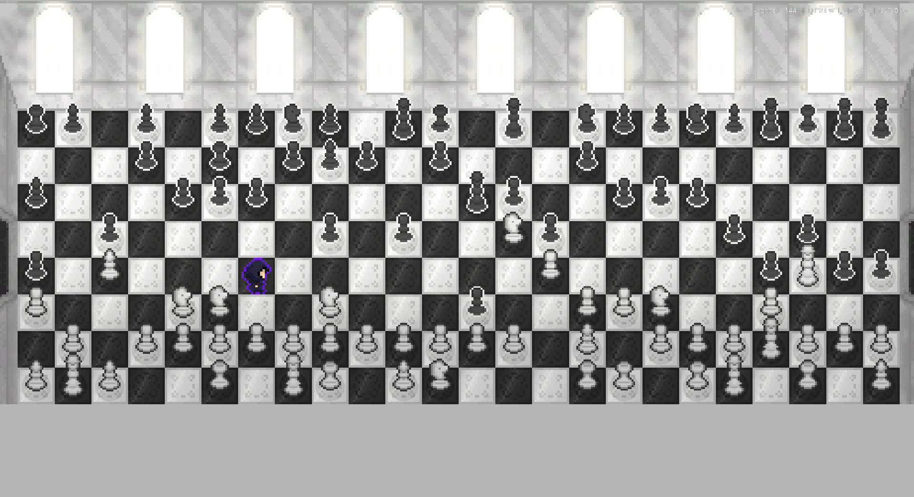
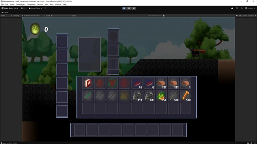
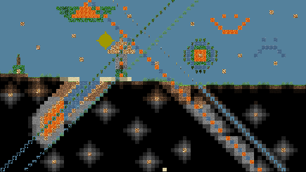
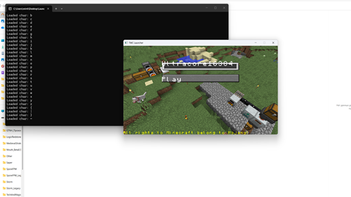

Мои проекты

Mouth
Огромный и сложный инди 2D симулятор развития микроорганизма в первичном бульоне.

DawnOfTheDungeonLords
Сделанная за 2 дня чернобелая 2D пошаговая стратегия для геймджема "B1T Jam 2".

Deadly Chess
Сделанная в команде за неделю 2D пошаговая стратегия для геймджема "Без права на ошибку".

Elemental Force
Масштабный инди 2D платформер-RPG, в разработке которого я принимал участие (сейчас в бете).

Storm
Моя пародия на Terraria без физики, для игры с нуля написан графический движок.

Tech&MagicClassic Launcher
Forge Minecraft лаунчер, созданный для запуска сборки модов и входа на сервер проекта.
Auth Forge
1.12.2 Forge Server-Side Minecraft мод-форк плагина Auth, т.к. рабочих альтернатив для своего сервера я не нашел.